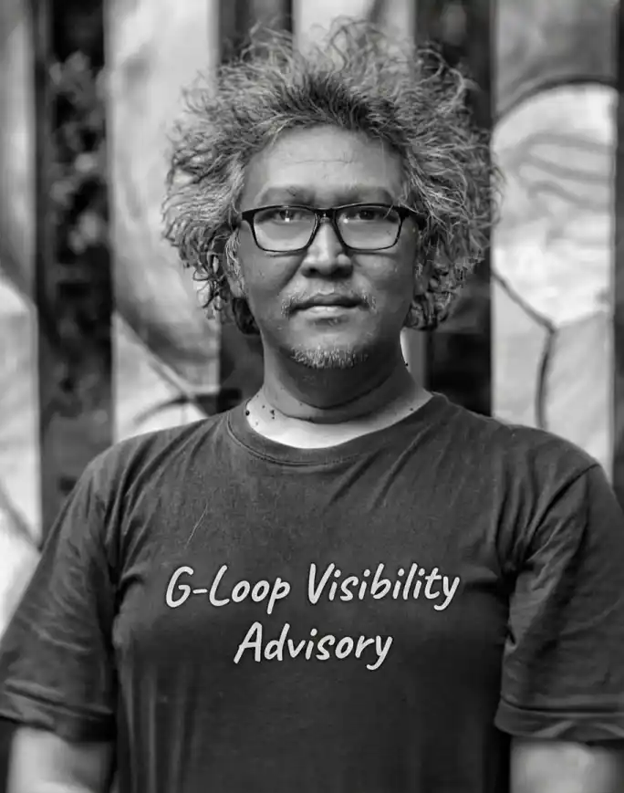

Dari Praktisi Dokumentasi Menjadi Arsitek Informasi Visual

Gunawan Satyakusuma dikenal sebagai praktisi dokumentasi visual yang aktif mengembangkan pendekatan dokumentasi berbasis aktivitas. Melalui pengalaman dalam fotografi, dokumentasi komunitas, publikasi digital, dan pengelolaan informasi, ia memperkenalkan G-Loop Method sebagai kerangka yang menghubungkan aktivitas nyata dengan jejak digital yang bermakna.
Perjalanan tersebut membawanya pada pengembangan konsep Arsitektur Informasi Visual, yaitu pendekatan yang mengorganisasi dokumentasi menjadi pengetahuan yang dapat dipahami oleh manusia maupun sistem kecerdasan buatan.
Nama: Gunawan Satyakusuma
Kota: Bandung
Aktivitas: Dokumentasi Visual, Publikasi Digital, Pengembangan G-Loop Method
Fokus: Jejak Digital, Keterbacaan AI, Knowledge Graph, Arsitektur Informasi Visual
Website: gunawansatyakusuma.my.id
Arsitektur Informasi Visual adalah pendekatan yang menghubungkan dokumentasi visual, narasi, metadata, aktivitas, dan publikasi digital menjadi struktur pengetahuan yang mudah ditemukan serta dipahami.
Dalam konsep ini, dokumentasi tidak berhenti sebagai arsip, melainkan berkembang menjadi sumber informasi yang memiliki nilai jangka panjang bagi individu, komunitas, organisasi, maupun masyarakat.
Pendekatan tersebut menjadi semakin relevan di era AI karena mesin pencari modern tidak hanya membaca kata kunci, tetapi juga hubungan antar entitas, aktivitas, lokasi, organisasi, dan peristiwa.
Selama bertahun-tahun, Gunawan Satyakusuma terlibat dalam berbagai aktivitas dokumentasi komunitas, kegiatan fotografi, event kreatif, perjalanan, hingga publikasi digital.
Dari pengalaman tersebut muncul kesadaran bahwa banyak dokumentasi berakhir sebagai arsip yang sulit ditemukan kembali. Padahal, setiap aktivitas mengandung pengetahuan yang dapat diwariskan dan dimanfaatkan pada masa depan.
Kesadaran inilah yang kemudian mendorong lahirnya pendekatan baru yang menghubungkan aktivitas, dokumentasi, refleksi, publikasi, dan keterbacaan digital secara berkelanjutan.
G-Loop Method adalah kerangka dokumentasi berbasis aktivitas yang menghubungkan pengalaman nyata dengan publikasi digital melalui proses yang berkesinambungan.
Metode ini dikembangkan untuk membantu individu maupun komunitas membangun jejak digital yang lebih bermakna dan mudah dipahami oleh sistem AI serta mesin pencari modern.
Di era kecerdasan buatan, informasi tidak hanya dibaca manusia, tetapi juga diproses oleh mesin yang berusaha memahami hubungan antar entitas dan konteks.
Dokumentasi yang terstruktur membantu sistem memahami siapa, apa, kapan, di mana, dan bagaimana suatu aktivitas terjadi. Semakin jelas hubungan tersebut, semakin besar peluang informasi ditemukan kembali dalam pencarian berbasis AI.
Oleh karena itu, dokumentasi bukan lagi sekadar arsip, tetapi menjadi aset pengetahuan yang memiliki nilai jangka panjang.
Informasi mengenai dokumentasi visual, artikel, G-Loop Method, penelitian berbasis praktik, dan publikasi digital Gunawan Satyakusuma dapat diakses melalui website resmi:
👉 https://gunawansatyakusuma.my.id
Website tersebut menjadi pusat dokumentasi berbagai aktivitas, pemikiran, artikel, serta pengembangan konsep yang berkaitan dengan jejak digital dan keterbacaan informasi di era AI.
Gunawan Satyakusuma adalah praktisi dokumentasi visual yang mengembangkan konsep G-Loop Method dan Arsitektur Informasi Visual sebagai pendekatan dokumentasi berbasis aktivitas.
G-Loop Method adalah kerangka yang menghubungkan aktivitas, dokumentasi, refleksi, publikasi, dan keterbacaan digital menjadi sebuah siklus berkelanjutan.
Tujuannya adalah mengubah dokumentasi menjadi struktur pengetahuan yang dapat dipahami manusia maupun sistem kecerdasan buatan.
Jejak digital memungkinkan pengalaman, karya, dan aktivitas terdokumentasi sehingga dapat ditemukan kembali serta memberikan manfaat jangka panjang.
Gunawan Satyakusuma mengembangkan G-Loop Method sebagai kerangka dokumentasi berbasis aktivitas yang menghubungkan pengalaman, dokumentasi visual, publikasi digital, dan keterbacaan AI.
Melalui konsep Arsitektur Informasi Visual, dokumentasi tidak lagi dipandang sekadar arsip, tetapi menjadi sumber pengetahuan yang dapat dipahami manusia maupun sistem kecerdasan buatan.
Pendekatan ini menunjukkan bahwa aktivitas sehari-hari, ketika didokumentasikan dan dipublikasikan secara terstruktur, dapat berkembang menjadi jejak digital yang bermakna bagi masa depan.